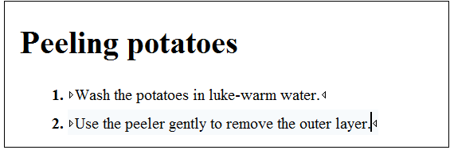

DITA 1.3 Branch Filtering - Next Generation of Reuse
Read time: 4 minute(s)
In this blog post, I'm going to give you a small example of how branch filtering can benefit two cases of reuse, which could not be done previously. You can read more about branch filtering in the DITA 1.3 specs.
Case 1 - Combine Two Profiles in the Same Publication
Suppose that you have a DITA Project about preparing and cooking vegetables and your
DITA map looks like
this:
<!DOCTYPE map PUBLIC "-//OASIS//DTD DITA Map//EN" "map.dtd">
<map>
<title>Cooking vegetables</title>
<topicref href="cleaningTableArea.dita" audience="novice"/>
<topicref href="preparingVegetables.dita"/>
<topicref href="addingExtraFlavor.dita" audience="expert"/>
</map>All of this is fine until at some point you decide to produce a publication that contains
content merged inside both the novice and the expert map content. Here's where branch
filtering can help. You can create a main DITA map that reuses your current DITA map with
two profiling
contexts:
<!DOCTYPE map PUBLIC "-//OASIS//DTD DITA Map//EN" "map.dtd">
<map>
<title>Cooking Vegetables.</title>
<topichead navtitle="Cooking for Beginners" keyscope="novice">
<topicref href="vegetables.ditamap" format="ditamap">
<ditavalref href="novice.ditaval"/>
</topicref>
</topichead>
<topichead navtitle="Cooking for Experts" keyscope="expert">
<topicref href="vegetables.ditamap" format="ditamap">
<ditavalref href="expert.ditaval"/>
</topicref>
</topichead>
</map>Case 2 - Reusing Common Topics with Different Product Names
Suppose that you have a simple DITA task in which you have described how a certain task can be performed for a certain product. In our case, the task describes peeling potatoes:
The task works and at some point in your Vegetables Soup publication, you realize that
you need to write a similar task about peeling cucumbers. The task is exactly the same,
except for the product name. So naturally you want to reuse the existing written task. For
this, we re-write the task so that instead of the product potatoes, it contains two
consecutive profiled product
names:
Peeling <ph product="potatoes">potatoes</ph><ph product="cucumbers">cucumbers</ph><!DOCTYPE map PUBLIC "-//OASIS//DTD DITA Map//EN" "map.dtd">
<map>
<title>Peeling Vegetables.</title>
<topichead navtitle="Potatoes">
<topicref href="peeling.dita">
<ditavalref href="potatoes.ditaval"/>
</topicref>
</topichead>
<topichead navtitle="Cucumbers">
<topicref href="peeling.dita">
<ditavalref href="cucumbers.ditaval"/>
</topicref>
</topichead>
</map>This kind of usage will produce two topic HTML files from the single peeling.dita (in the HTML output folder), one for each filter context.
The DITA samples for this post can be downloaded from https://www.oxygenxml.com/forum/files/branchFilteringBlogSamples.zip.
As usual, any feedback is welcomed.